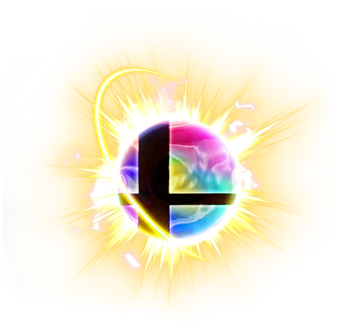

Home
My Smash Ultimate Mains
About King K. Rool
Matchup Charts: King K. Rool
About Sonic
Matchup Charts: Sonic
The Competitive Scene
Recommended Equipment
Fun Facts About Smash Bros.
So... What Exactly Is Super Smash Bros.?
Super Smash Brothers is a very popular Nintendo fighting game franchise that started in 1999, created by Masahiro Sakurai. There are currently five installments in the Super Smash Brothers franchise, and each of them have their own unique gameplay, game modes, and features. Whether you want to have a very long combo game in Smash 64, a very technical and fast game plan in Smash Melee, a casual blast of a party game with Smash Brawl, a plethora of custom moves to mess around with in Smash 4, or have a bunch of characters at your disposal in Ultimate, there is something for every Smasher!
Smash Bros. is quite an untraditional fighting game series. Instead of complex command inputs being the norm for doing moves, you are doing very basic inputs that are very accessible to anyone, whether you are at a top of the world level or you are a beginner checking out the game for the first time. In addition, Smash Brothers' health system is very different from the traditional fighting game. Instead of you having a fixed amount of health and you being K.O.'d when you run out of health, Smash Brothers has a percent system. This percentage system can go up to a maximum of 999%, however you are susceptible to dying much earlier than 999%. You typically die at around 100% or so, but you can be K.O.'d earlier or later than that as well. You have a limited amount of space in a fighting stage, which a lot of the stages including all of the competitive ones are floating, and based on your percentage level, you can be K.O.'d at certain spots with certain moves by being launched far enough by your opponent to go out of bounds, or in Smash terms, enter the blast zone.
You can learn more about each Super Smash Bros. game via their reveal trailers in the YouTube windows below.
Home
My Smash Ultimate Mains
About King K. Rool
Matchup Charts: King K. Rool
About Sonic
Matchup Charts: Sonic
The Competitive Scene
Recommended Equipment
Fun Facts About Smash Bros.